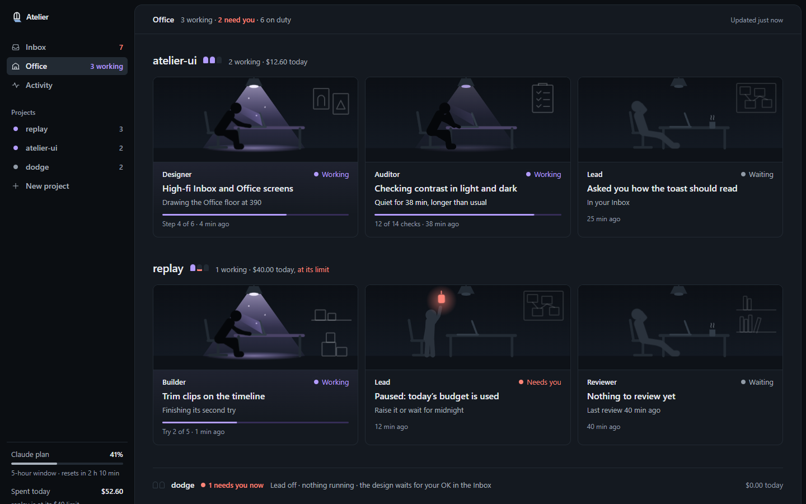
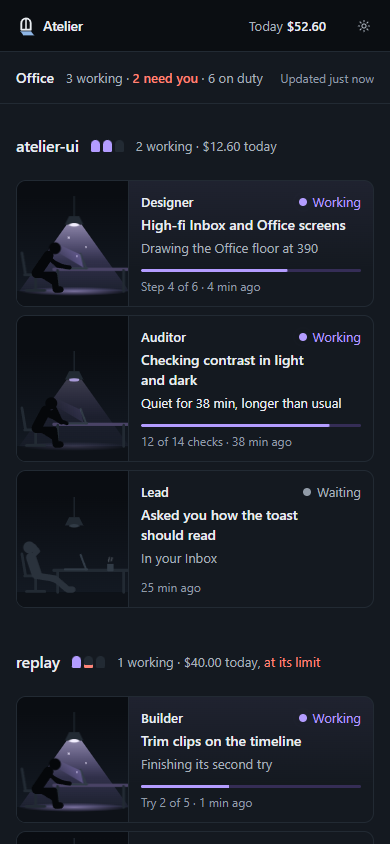
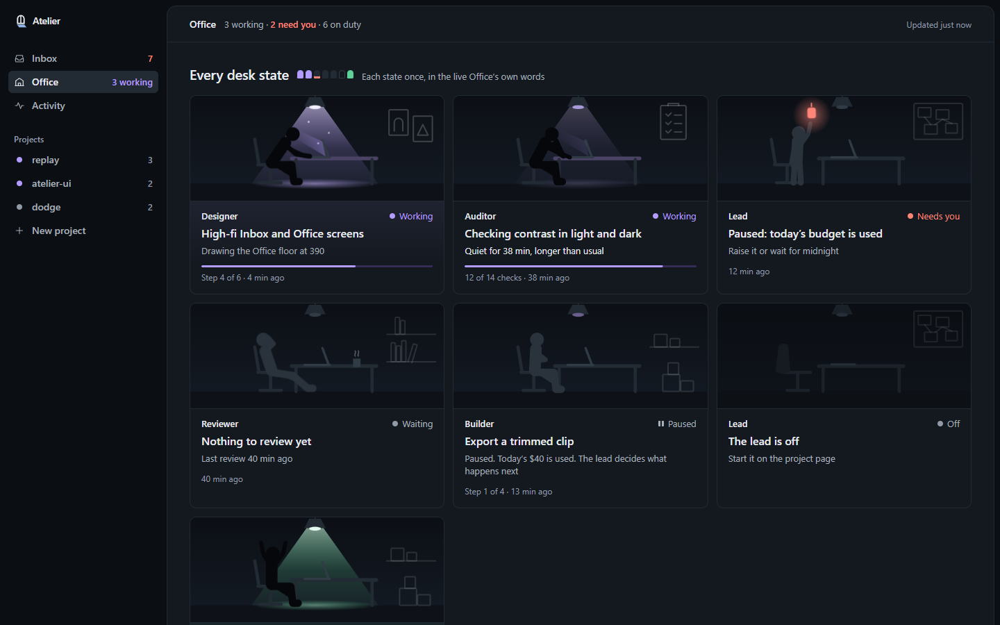
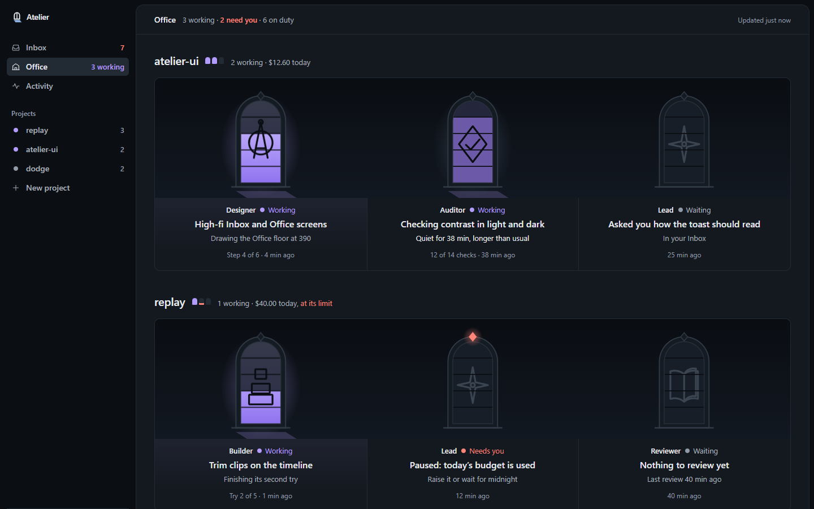
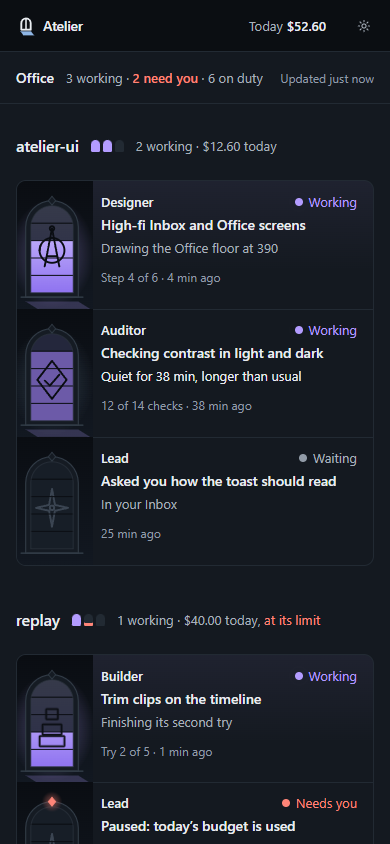
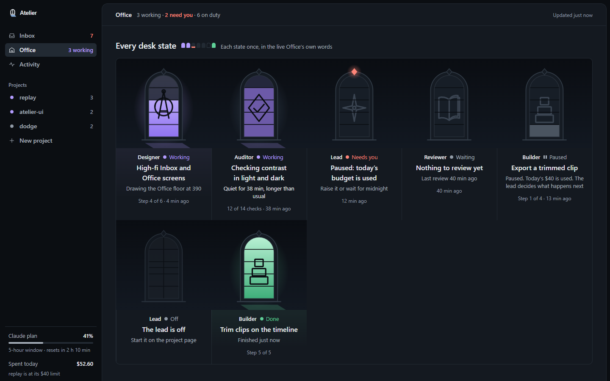
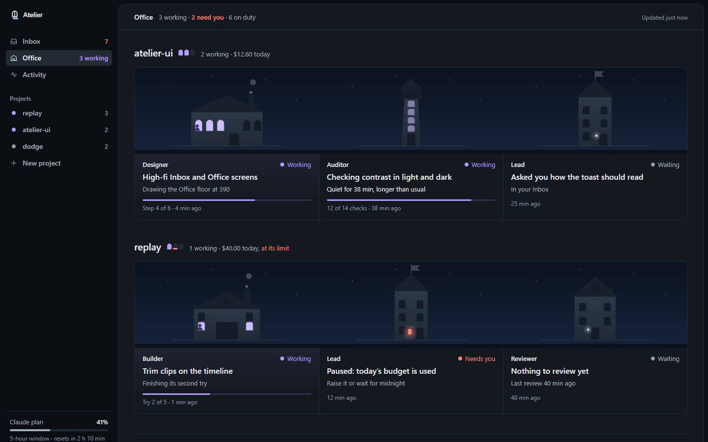
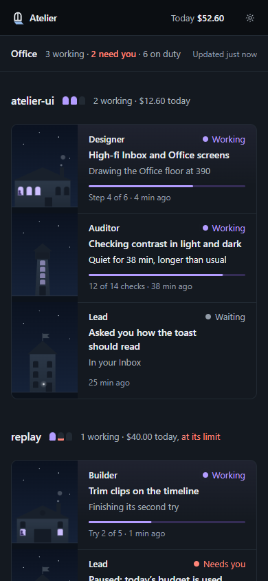
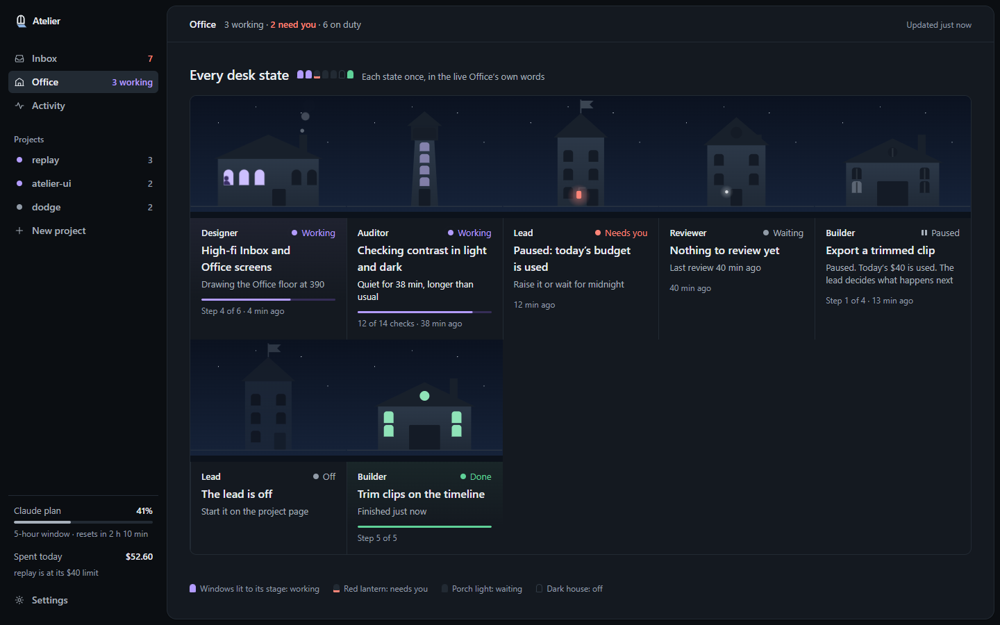

D-A · from 7 One light per desk
Lamplight
Feel: a quiet studio after dark where each agent works under its own lamp, and you can read the room from the doorway: who is leaning in, who is waiting with a mug, who is holding up a little red lantern for you.
To build: light. One inline SVG per desk (six poses, five wall props), switched by CSS from the state the Office already has; no image files.



Open it live, with the demoEvery stateLight modeWatch the 14 s recording
D-B · from 8 Lit shrines, with 16’s gauge
Lit shrines
Feel: a gallery of tall arched windows, our mark at room scale, where the light alone tells the story: the glass fills from the sill as a task moves through its five stages, a keystone burns red when someone needs you.
To build: light to medium. One SVG window per desk; the five role emblems are simple geometry today and would gain most from an illustrator’s pass.



Open it live, with the demoEvery stateLight modeWatch the 14 s recording
D-C · from 12 Town at night, with 7’s silhouettes and 16’s gauge
Night street
Feel: each project is a little street at night and each agent a house shaped by its role; windows light one by one as the work moves on, someone paces behind the glass, smoke rises from the chimney, and a red lantern by a door means that house needs you.
To build: medium. Five house drawings in SVG with small CSS habits (smoke, a pacing figure, the tower’s beam); more pieces to keep calm and crisp at phone size.



Open it live, with the demoEvery stateLight modeWatch the 14 s recording
My pick: D-A Lamplight
It is the most personable of the three without giving anyone a face: six postures and a lamp are enough to tell, from across the room, who is busy, who is idle and who wants you. It keeps the calm of 7 and the brand’s light-in-the-dark idea, and one light per desk is the plainest possible reading of state. It is also the lightest to build and stays crisp on a phone, where D-B’s emblems and D-C’s houses get small.